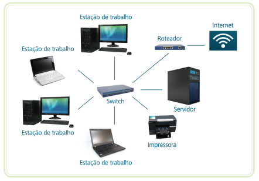

O que é uma rede (conceito básico)
Uma rede é um conjunto de computadores e dispositivos conectados entre si para compartilhar informações e recursos.
Por exemplo: Imagine que você está finalizando a documentação de um projeto no seu computador. Seu colega de equipe está trabalhando de casa, a centenas de quilômetros de distância. Para que ele receba esse documento, você o envia por e-mail.
Esse processo só é possível porque os dois computadores estão conectados à internet, que é uma rede mundial de computadores. Mesmo longe fisicamente, vocês conseguem trocar informações em segundos, graças à rede.
Fonte: CTISM (Imagem da apostila "Informática Básica" da UFSM)
📡 Classificação das Redes
- ▶ Redes LAN: Local Area Network (Rede Local) é uma rede pequena, geralmente uma sala, prédio ou lan house.
- ▶ Redes WAN: Wide Area Network (Rede de longa distância) é uma rede que interconecta redes lan’s, normalmente ela é conectada por cabos de fibra ótica ou satélite.
📶 Principais tipos de Componentes de uma Rede de Computadores
- ▶ Roteadores: usados em redes de maior porte, eles também estabelecem comunicação entre duas máquinas, com a diferença que esses equipamentos possuem a capacidade de escolher a melhor rota que a informação deve percorrer entre origem e destino, dando maior rapidez à transmissão das informações.
- ▶ Servidor: é um computador mais potente, conectado à rede, cuja função é compartilhar serviços.
- ▶ Estações de trabalho: também chamados de clientes, são os computadores utilizados por você ou outro usuário para usufruir dos serviços da rede (arquivos e programas, acesso à internet, etc.).
Conexão com Wi-Fi e cabo
▶️ Conexão com Wi-fi
Abreviação de “Wireless Fidelity” (fidelidade sem fio). Também conhecida somente como wireless, é uma tecnologia de comunicação entre dispositivos (computadores e telefones celulares principalmente) que utiliza frequências de rádio (ou outro meio de propagação de dados) e não precisa do uso de cabos.